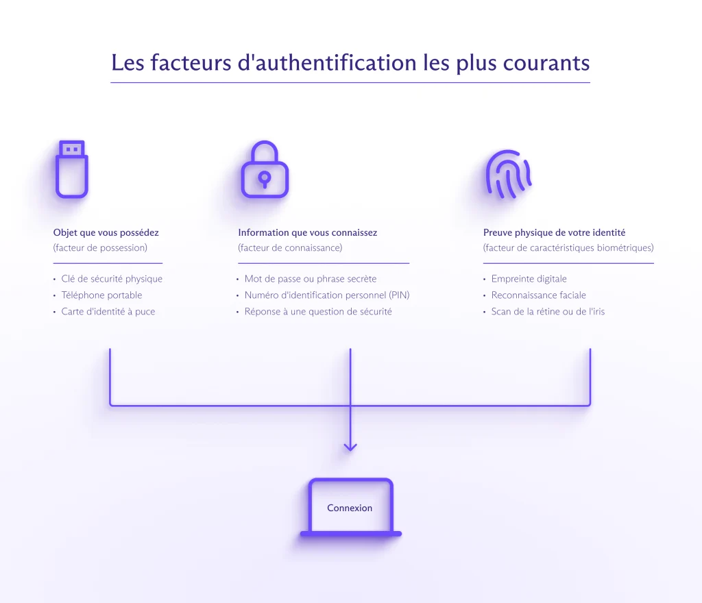
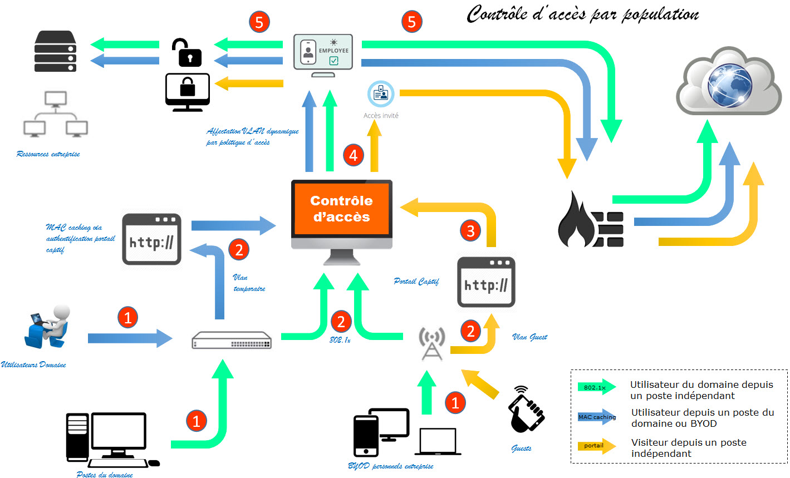

Veille Informatique Le modèle de sécurité Zero Trust
Objectif
Dans le cadre du Bloc 1 – Support et mise à disposition de services informatiques, j’ai réalisé une veille informationnelle sur le modèle de sécurité Zero Trust. L’objectif était de comprendre cette nouvelle approche de sécurisation des systèmes d’information et d’identifier son intérêt pour les entreprises.
Présentation du modèle Zero Trust
Le modèle Zero Trust repose sur un principe simple : « Never trust, always verify ». Contrairement au modèle traditionnel basé sur la protection du réseau interne, Zero Trust considère que chaque utilisateur, appareil ou application peut représenter un risque, même s’il se trouve à l’intérieur du réseau.
Chaque accès doit donc être vérifié et authentifié. Cela implique un contrôle strict des identités, des autorisations et des appareils utilisés pour se connecter aux ressources de l’entreprise.
Image : Schéma explicatif du modèle Zero Trust
Figure 1 – Principe de vérification systématique des accès.
Les principaux mécanismes de sécurité
Le modèle Zero Trust s’appuie sur plusieurs mécanismes techniques comme l’authentification multifacteur (MFA), la segmentation du réseau et la gestion fine des droits d’accès. Chaque utilisateur ne dispose que des permissions strictement nécessaires à son activité.
La surveillance continue des connexions permet également de détecter des comportements anormaux et de bloquer rapidement une tentative d’intrusion.
Image : Exemple d’authentification multifacteur
Figure 2 – Illustration d’une authentification renforcée par double vérification.
Intérêt pour les entreprises et lien avec le Bloc 1
Avec le développement du télétravail et du cloud, les entreprises doivent sécuriser les accès à distance. Le modèle Zero Trust répond à cette problématique en protégeant les données indépendamment de l’emplacement de l’utilisateur.
Cette approche est directement liée aux missions du Bloc 1, notamment la gestion des accès, la protection du patrimoine informatique et la continuité de service.
Image : Exemple de contrôle d’accès réseau
Figure 3 – Exemple de gestion et de restriction des accès utilisateurs.
Bilan
Cette veille informatique m’a permis de comprendre l’évolution des stratégies de cybersécurité. Le modèle Zero Trust apparaît comme une réponse adaptée aux nouvelles menaces et aux environnements de travail modernes.
Conclusion
Le Zero Trust représente une évolution importante dans la manière de sécuriser un système d’information. En renforçant les contrôles d’accès et en limitant les droits des utilisateurs, il contribue à réduire les risques d’intrusion. Cette veille me permet de mieux comprendre les enjeux actuels de la sécurité informatique et leur impact sur le rôle du technicien support.